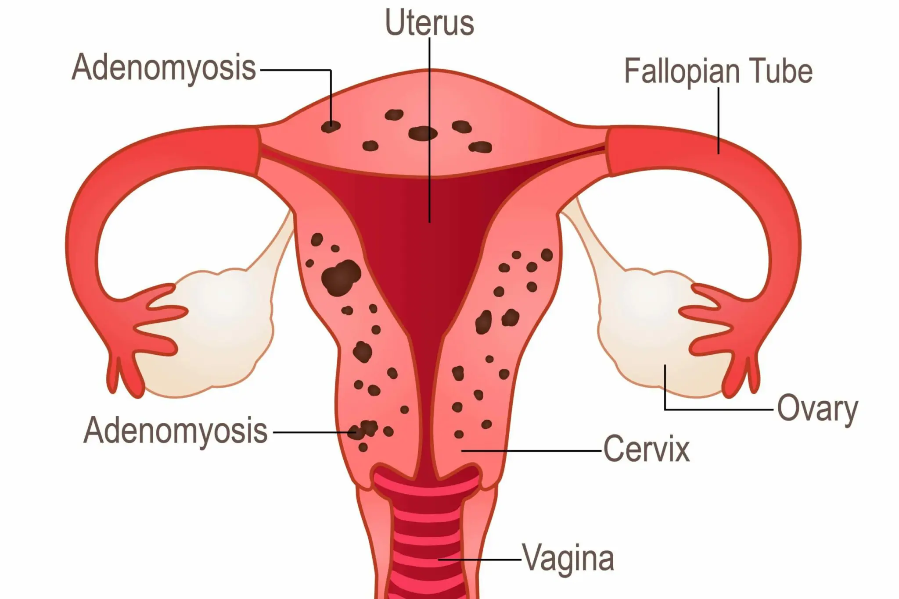

Adenomyosis

CAUSES
There are several theories about what causes this condition. They include:
- invasive growth of endometrial cells into the uterine muscle — this may be due to an incision made in the uterus during surgery (like a cesarean delivery) or during normal uterine functioning
-
uterine inflammation that occurs after childbirth — this may break the usual boundaries of the cells that line the uterus
-
extra tissues in the uterine wall, which are present before birth and grow during adulthood
-
stem cells in the myometrium, or uterine muscle wall
SYMPTOMS
The most common symptoms include:
- heavy or prolonged menstrual bleeding
-
painful menstrual cramps
-
blood clots during menstrual bleeding
-
pain during sexual intercourse
-
infertility
DIAGNOSIS
Diagnostic evaluation generally includes a physician exam and imaging. The doctor will want to perform a physical and pelvic exam to determine if your uterus is enlarged or tender to palpation. In some cases, people with adenomyosis can have a uterus that’s double or triple the normal size.
Imaging tests that may be performed include an ultrasound or MRI scan.
TREATMENTS
People with mild forms of adenomyosis may not require medical treatment. The doctor may recommend treatment options if your symptoms interfere with your daily activities or quality of life.